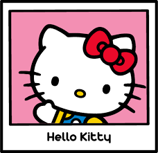

Hello Kitty é um personagem fictício criado pela empresa japonesa Sanrio. Ela é uma gatinha branca com um laço vermelho na cabeça e é conhecida por sua aparência fofa e amigável. Hello Kitty é um ícone da cultura pop e tem uma grande base de fãs em todo o mundo, especialmente entre crianças,adolescentes e em alguns adultos como a prof mary